第20章
碎纸机的故事
生命的图书馆里有一头叫作数字人文学（Digital Humanities）的怪兽，它拥有文学评论家的身体、统计学家的头脑，以及心理学家史蒂芬·平克（Steven Pinker）的一头乱发。有些人把它当作射入黑暗洞穴的一束光，并为之欢呼；而另一些人则把它视为流着口水啃着第一版《包法利夫人》的狗，对它不屑一顾。所以，这只怪兽是做什么的呢？
很简单：它将书籍转换成数据集。
1. “可想而知”做错了什么？
去年，我读了本·布拉特（Ben Blatt）的著作《纳博科夫最喜欢的词》1，这本令人愉悦的书通过统计技术分析了一些文学领域的伟大作家。第一章题为“简洁‘地’用词”，探讨了一个老生常谈的写作建议：少用副词。斯蒂芬·金曾经把副词比作杂草，并警告说：“通往地狱的道路是由副词铺成的。”因此，布拉特统计了不同作者的作品中以“-ly”结尾的副词使用频率（firmly“坚定地”，furiously“猛烈地”等），最后发现：
在1000个单词中以“-ly”结尾的副词出现次数
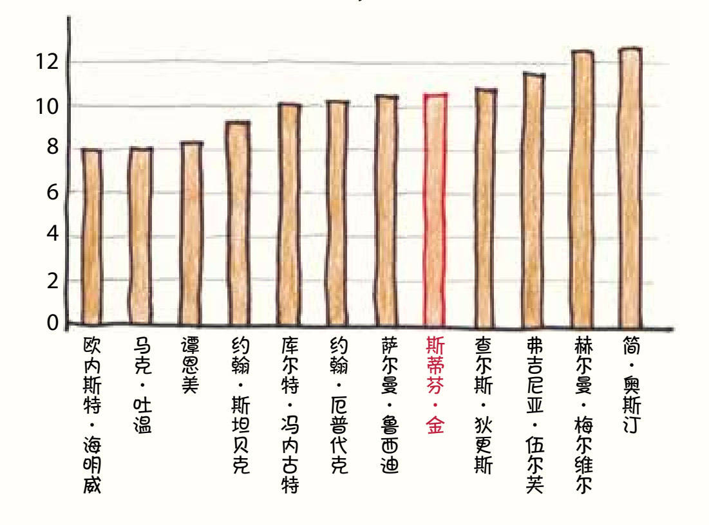
作为英国最杰出的小说家之一，简·奥斯汀对副词的友好态度似乎充分驳斥了这一观点。但是布拉特指出了一个有趣的规律，在同一个作家的作品中，最伟大的小说2往往使用的副词最少。（衡量“伟大”的标准请参见尾注）
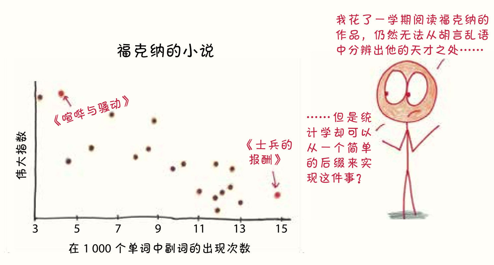
F.斯科特·菲茨杰拉德副词最少的小说是《了不起的盖茨比》；托妮·莫里森的是《宠儿》；查尔斯·狄更斯的是《双城记》，紧随其后的是《远大前程》。当然，也有例外——纳博科夫的《洛丽塔》可以说是他最受推崇的小说，而其中的副词频率达到巅峰。但趋势还是很明显的：低频使用副词让写作更清晰有力，而高频使用副词暗示了内容和节奏不够紧凑。
我想起了大学里的一天，我的室友尼尔什笑着对我说：“你知道我最喜欢你什么吗？就是你非常爱用‘可想而知’（conceivably）这个词，这是你的口头禅之一。”
我愣住了，进行了反省。而从那一刻起，“可想而知”这个词从我的字典里消失了。
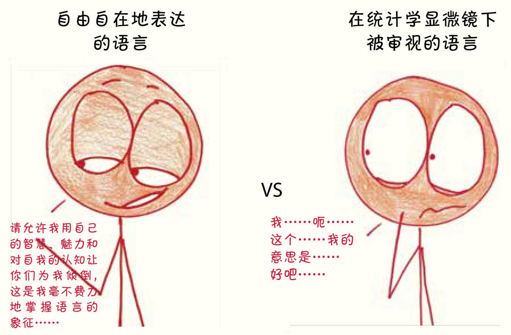
尼尔什为这个词的消失难过了好几个月，而我同时背叛了两个朋友——这个单词和我的室友。我实在无能为力。原本我脑海中那个将意义转化为文字的幽灵是靠本能在工作的，它在阴影中自在地茁壮成长，而当我们把注意力集中到一个特定词的选择上时，会使这个幽灵感到害怕，它便退缩了，再也不用这个词了。
看了布拉特的统计数据后，这种情况再次发生了。我得了副词妄想症。从那以后，我写作的时候就像一个不安的逃亡者，害怕那些以“-ly”结尾的副词会像蜘蛛爬进熟睡时的我嘴里那样溜进我的散文中。我认识到，这是一种生硬的、人为的语言研究方法，更不用说其中幼稚的“相关性等于因果关系”的统计方法了。但是我没办法。简单来说，这就是数字人文学科的希望和危险；而就我而言，重点在于“简单”。
文学作为词的集合，是一个异常丰富的数据集。反之，如果仅仅作为一个词的集合，文学就不再是文学。
统计在运作时会排除上下文，它对洞察力的探索始于意义的消失。作为一个统计爱好者，我被吸引了；而作为一个爱书的人，我却退缩了。丰富的文学语境和冰冷的统计分析之间，能否有和平共处的方式？还是像我担心的那样，它们就是宿敌？
2. 统计学家解放了文化的研究
2010年，以让-巴蒂斯特·米歇尔（Jean-Baptiste Michel）和埃雷兹·利伯曼·艾登（Erez Lieberman Aiden）为首的14位科学家发表了一篇轰动全球的研究文章，文章题为《通过数百万本数字化书籍对文化进行的定量分析》（Quantitative Analysis of Culture Using Millions of digital Books）3。每当我读到它的开场白时，我都情不自禁地感叹一声“我的天哪”。它的开头是：“我们构建了数字化文本的语料库，其中包含的书占世界上印刷图书总数的4%。”
我的天哪！
与所有统计学研究项目一样，这个研究需要大刀阔斧地简化。文章作者做的第一件事就是将整个数据集——500万本书，总计5000亿个单词——都分解成他们所谓的“1-gram”。他们解释道： “一个1-gram就是一串中间没有空格的字符，包括单词（'banana' 'SCUBA'），也包括数字（'3.14159'）和错别字（'excesss'）。”
句子，段落，论点——它们统统消失了，只剩下一个个文本的碎片。
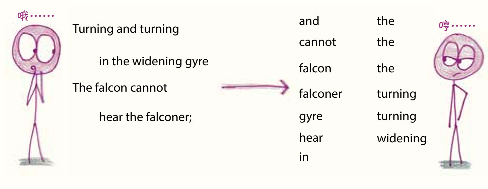
为了探测数据的深度，研究人员汇总了频率为十亿分之一以上的1-gram。从20世纪初期到中期再到末期，他们可以从语料库看出语言的不断发展：
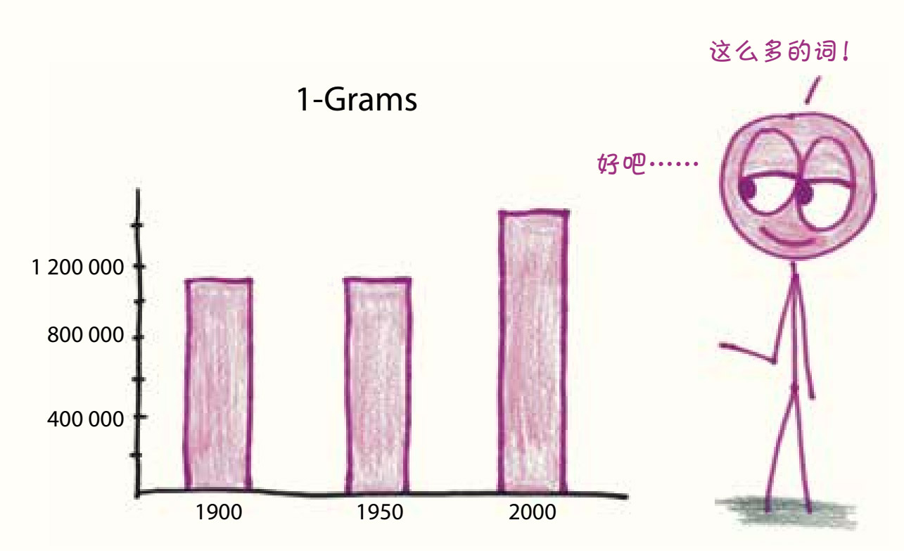
在研究了数据后发现，1900年的1-gram中只有不到一半是真正的单词（不属于数字、拼写错误、缩写等），而2000年的1-gram中有超过三分之二是真正的单词。从统计的样本中，研究者估算出了每年英语单词的总数：
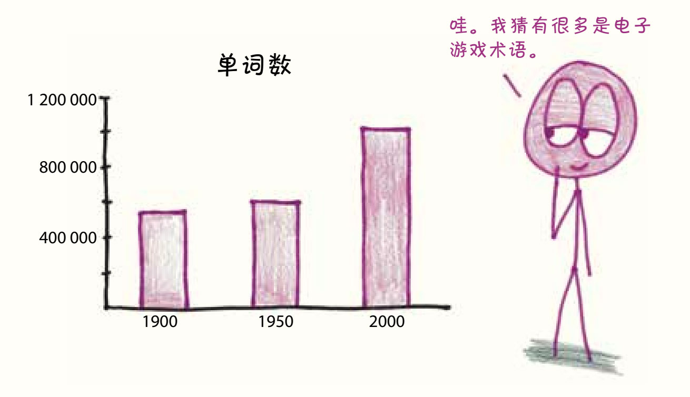
接着，他们在两本常用的词典中查找了这些1-gram，发现词典编纂者正在努力跟上语言的发展步伐。尤其值得一提的是，这些词典没有收录大多数罕见的1-gram单词：
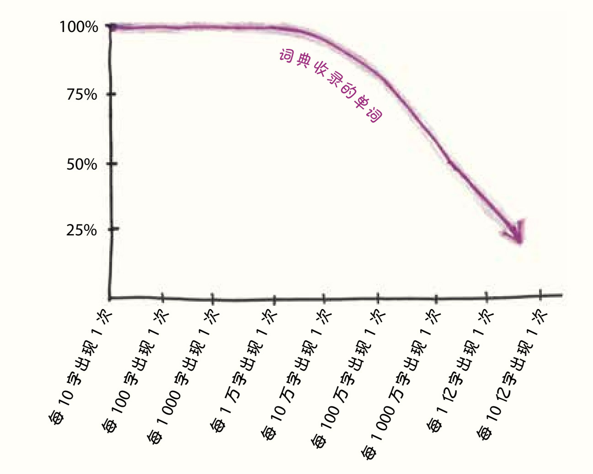
我在平时的阅读中，并没有遇到很多罕见的、词典中没有收录的词汇。那是因为……嗯……它们确实很罕见。然而，语言中充斥着大量默默无闻的、出现频率低于一亿分之一的单词。总的来说，作者估计“52%的英语词汇，也就是英文书中使用的大多数单词，都是由标准参考文献中没有记载的‘暗物质’词汇组成”。这些词典只触及了皮毛，漏掉了像“slenthem”（一种金属制作的乐器）这样的珍宝词汇。
对这些研究人员来说，在词汇中的探险还只是热身。接下来，作者们通过跟踪筛选的1-gram频率研究了语法的演变、作家成名的轨迹、审查制度的印记和历史记载的转变模式。所有这些只用了十几页就完成了。
这篇文章让我惊掉了下巴。《科学》杂志察觉了这一研究的重要意义，免费向非订阅客户开放这篇文章。《纽约时报》宣称：“这是一扇崭新的文化之窗。”4
文学学者倾向于研究独特的“经典”，只有少数精英作家能被深入、专注地分析。比如托妮·莫里森和詹姆斯·乔伊斯，还有坐在乔伊斯的键盘上敲下了《芬尼根的守灵夜》（Finnegans Wake）的那只猫。但这篇论文指向的是另一种模式：一个包罗万象的“语料库”，在这个语料库中，无论是知名的还是无名的图书，都同样获得研究者的注意。统计数据是推翻文学的寡头制、建立起民主政体的有力工具。
理论上，精读和正典与统计学和语料库，这两种模式并没有无法共存的理由。尽管如此，像“精确测量”5这样的短语还是指出了一种冲突。文学的意义能“精确”吗？它们可以被描述为“可测量的”吗？或者说，这些强大的新工具会带领我们离开难以量化的艺术深处，去寻找我们的锤子能打到的钉子吗？
3. 这句话是女人写的
在我来看，散文应该是没有性别的。我的散文像雌雄同体的海绵；弗吉尼亚·伍尔芙的散文则像银河6或神的启示。但伍尔芙在《一间自己的房间》表达了相反的观点，她认为早在1800年，流行的文学风格就已经演变成男人思想的容器，容纳不了女人的思想。散文的节奏和形式本身就带有某些性别特征。
这个观点在我脑海里萦绕了几个月，直到我在网上看到一个叫“魔幻酱汁”（Apply Magic Sauce）7的项目，它可以阅读你复制粘贴上去的文章节选，并通过神秘的分析方法预测作者的性别。
这太有意思了，我必须试试。
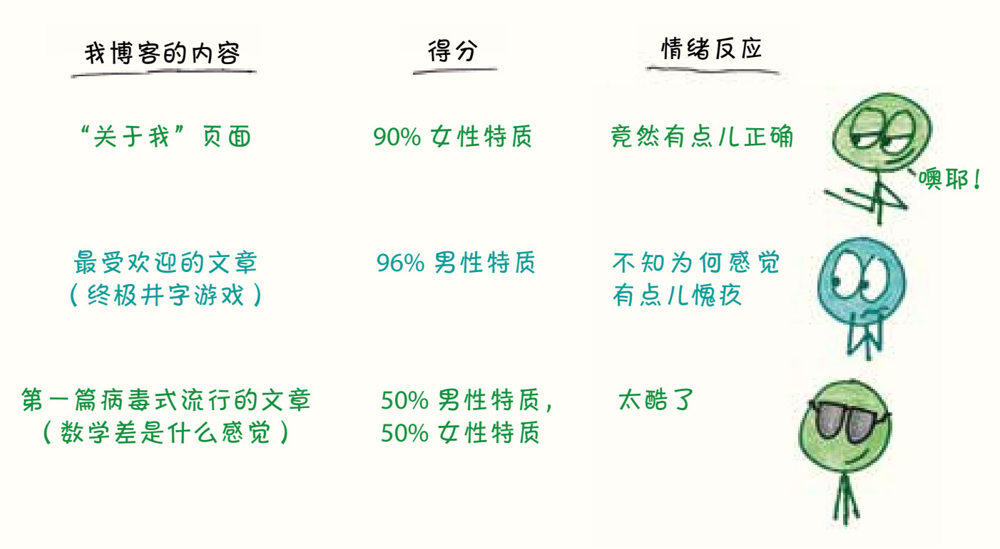
在眼花缭乱的博客网站上，我花了一个小时复制粘贴了25篇博客文章8，这些文章写于2013年至2015年。最终的结果是这样的：
分辨我博客的性别
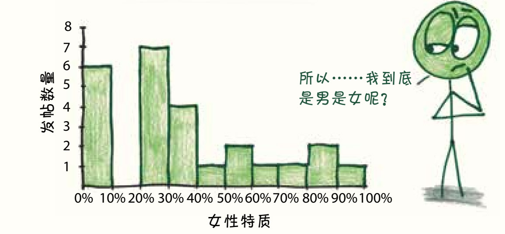
由于“魔幻酱汁”团队对技术是保密的，我开始试图探究这个算法可能的运行模式。它是用图表绘出了我的文章片段吗？它嗅出了我情感中潜在的男权主义吗？它是否像我想象中的弗吉尼亚·伍尔芙那样，渗透到我的思想中，把阅读图书上升为一种阅读灵魂的形式？
不，它很可能只是观察单词的频率。
在2001年发表的一篇名为《按作者性别对文字自动进行分类》（Automatic Categorizing writing text by Author Gender）的论文9中，三位研究人员仅通过计算几个简单单词的出现次数，就成功地将男性和女性作家区分开来，准确率达到80%。后来的一篇题为《正式书面文本中的性别、体裁和写作风格》（Gender, Genre, and Writing Style in Formal Written Texts）10的论文用通俗易懂的语言阐述了这些差异。一方面，男性更多地倾向于使用名词限定词（“一个”“这”“一些”“大多”……）；另一方面，女性更喜欢使用代词（“我”“他自己”“我们的”“他们”……）。
非虚构类作品中的单词类型
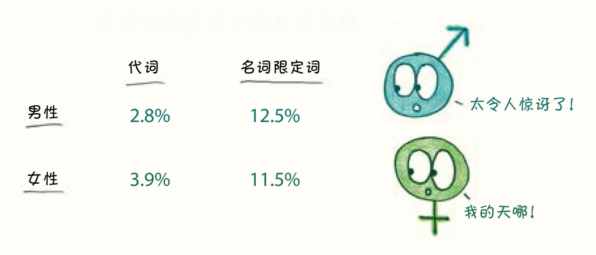
事实上，甚至连“你”这个平平无奇的单词出现的频率都能透露出作者的性别：
虚构类作品中“你”一词的使用
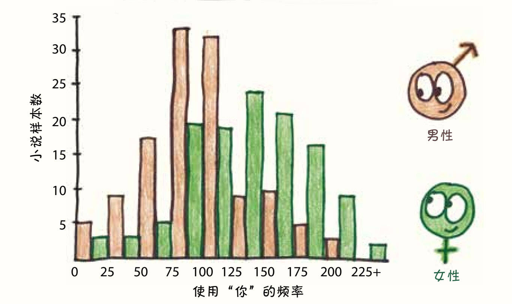
这个数据系统如此简洁，让人们更惊讶于它的准确性。这种方法忽略了所有的上下文、所有的句意，只关注非常小的一部分单词的选择。正如布拉特所指出的那样，它会把“这句话是女人写的”11这句话评价为更有可能是男人写的。
然而，如果你把视野扩大到所有的单词，而不仅仅是语法上的小连接词，那么结果就会转向刻板印象。一家名为CrowdFlower的数据公司研究出一种用于推断社交网络账户所有者性别的算法，它选出了以下性别预测词汇：12
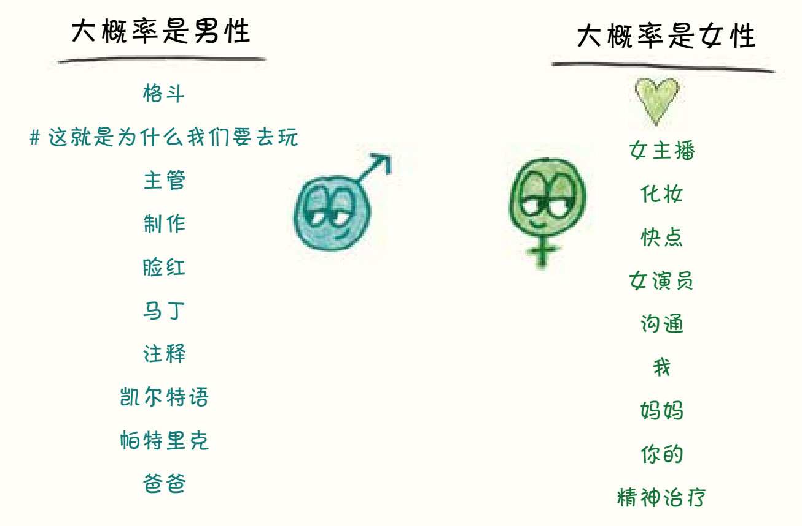
而在《纳博科夫最喜欢的词》中，本·布拉特发现经典文学中最具有性别特征的词是13：
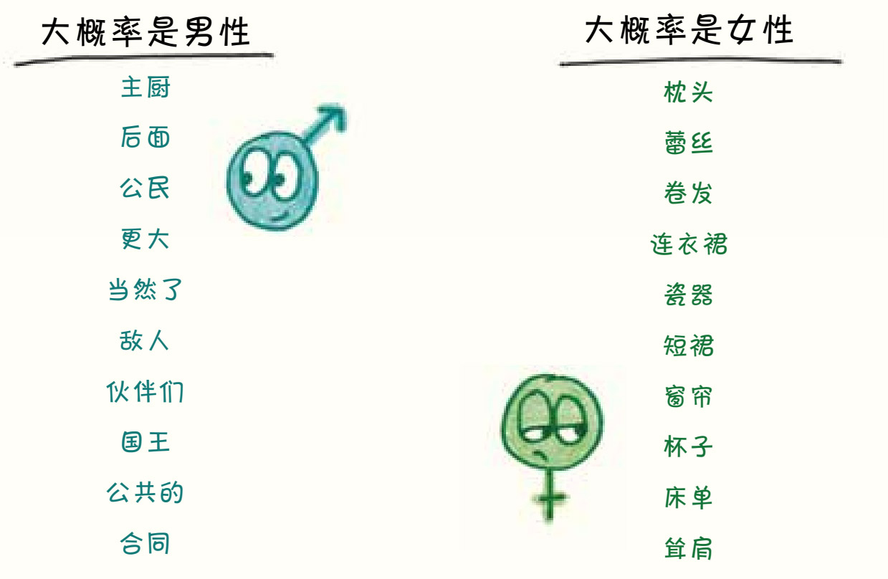
“魔幻酱汁”看起来也依靠了这些线索。当数学家凯茜·奥尼尔使用“魔幻酱汁”的算法测试一名男性写的关于时尚的文章时，结果为99%女性特质。当她测试一名女性写的关于数学的文章时，结果是99%男性特质。而奥尼尔自己的三篇文章则分别获得了99%、94%和99%的男性特质评分。“这是个小范围的测试，”她写道，“但我打赌，这个模型代表了一种刻板印象，根据作者选择的主题来确定作者的性别。”14
这些结果不准确的例子并没有平复我内心的恐惧。我的男性特质似乎已经渗透到我的思维中，以至于一种算法可以用两种不重叠的方式将它检测出来：其一是我对代词的使用情况；其二是我对欧几里得的喜爱。
我知道，这在某种程度上证明了伍尔芙是对的。她发现了男人和女人正经历着不同的世界，并相信女权的斗争必须从句子的层面开始。15粗糙的统计数据也证实了这一点：女性写作的话题和方式与男性不同。
不过，我还是觉得这一切都有点儿令人沮丧。如果说伍尔芙的写作揭示了她的女性特质，我更愿意认为这些女性特质嵌入了她的智慧和幽默之中，而不是通过她使用名词限定词的频率较低表现出来的。听伍尔芙分辨男性和女性的散文，感觉像是去看一位值得信赖的医生，而如果让算法做同样的事，就让人感觉像在机场被搜身一样。
4. 建筑，砖块和砂浆
写于1787年的《联邦党人文集》为美国的治理奠定了基础。文集中充满了政治的智慧、精明的辩论和不受时间影响的名言。如果能把“参加了这部文集的编写”写进简历，那将成为“杀手锏”，但还有一个问题——作者没有署名。
在最初的77篇文章中，历史学家认为亚历山大·汉密尔顿写了43篇，詹姆斯·麦迪逊写了14篇，约翰·杰伊写了5篇，几个作者合著了3篇，但还有12篇的作者仍然是谜。作者是汉密尔顿还是麦迪逊？将近两个世纪后，这个悬案早就失去了讨论的热度。
20世纪60年代，两位统计学家登场了：弗雷德里克·莫斯塔勒（Frederick Mosteller）和戴维·华莱士（David Wallace）。弗雷德里克和戴维都意识到了这个问题的棘手之处。在写作时，汉密尔顿平均每句为34.55个单词，而麦迪逊平均每句为34.59个单词。“从某些方面来看，”他们写道，“两位作者简直是双胞胎。”16因此，他们采取了优秀的统计学家在面对棘手问题时通常会选择的办法。
他们把《联邦党人文集》撕成了碎片。17
上下文？不再考虑了。其中的意义呢？也随之灰飞烟灭。只要《联邦党人文集》仍然是基础文本的集合，它们就毫无用处。它们必须变成一张张字条和一堆堆倾向，换句话来说，一个数据集。
即使在数据集里，大多数的单词也都是没用的。它们出现的频率并不取决于作者，而是取决于主题。比如关于“战争”一词，弗雷德里克和戴维写道：“在讨论武装部队时，这个词出现的频率预计会很高。而在关于投票的讨论中，这个词出现的频率很低。”他们给这些词贴上“语境化”的标签，并尽量避免使用它们，因为它们本身的意义太明确，和主题相关性太高了。
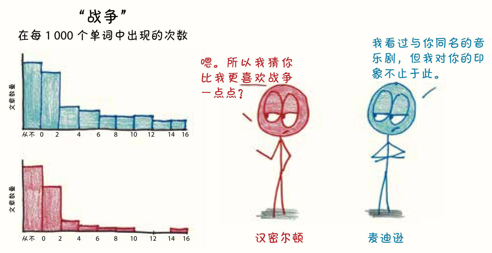
在寻求“无意义”的单词时，对“根据（upon）”这个词的分析押对了宝，麦迪逊几乎从未使用过这个词，但汉密尔顿把它当作万能调味料：
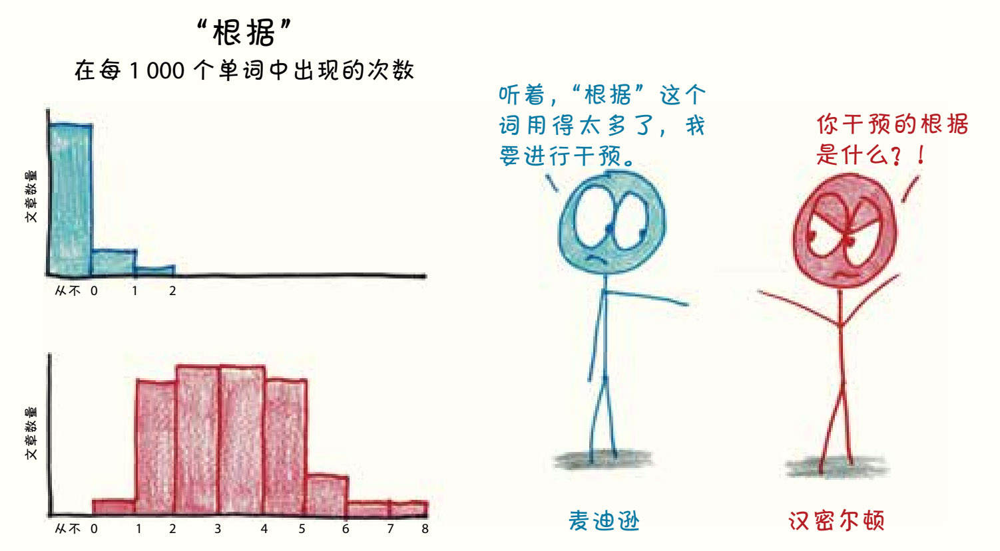
有了这些数据，弗雷德里克和戴维把每个作者都简化成一沓“无意义”单词的扑克牌，在同一沓牌中，每张扑克牌（每个单词）出现的频率是基本一定的。接下来，只要统计某些特定单词在那些作者存疑的文章中的出现频率，他们就可以推断出这篇文章到底属于哪一沓牌。
这是个好办法，他们就这样得出了结论：“那12篇有争议的文章极有可能都是麦迪逊写的。”
半个世纪以来，这一技术已经成为一个标准的研究方法。人们用它分析过古希腊散文、伊丽莎白一世时期的十四行诗和罗纳德·里根演讲稿的作者。本·布拉特将这个算法运行了近3万次，仅通过统计250个常用词的频率，验证这个算法在面对一本书的两个真假作者时的分辨能力，结果发现它的成功率为99.4%。
尽管理智告诉我这没有什么错，但我的情绪还是很抗拒他们这么做。我要怎么才能接受一本书就这样被分解成字节了呢？
2011年，斯坦福大学文学实验室的学者尝试了一个棘手的跃进试验：从识别文章作者到识别文章体裁。18他们使用了两种方法：词频分析和一种更复杂的句子层面的工具（称为Docuscope）。出人意料的是，这两种方法都能进行准确的体裁判断。
以下面的文段为例，这是电脑认为在由250本小说构成的语料库中最具“哥特风格”的一页：
He passed over loose stones through a sort of court, till he came to the arch-way; here he stopped, for fear returned upon him. Resuming his courage, however, he went on, still endeavouring to follow the way the figure had passed, and suddenly found himself in an enclosed part of the ruin, whose appearance was more wild and desolate than any he had yet seen. Seized with unconquerable apprehension, he was retiring, when the low voice of a distressed person struck his ear. His heart sunk at the sound, his limbs trembled, and he was utterly unable to move. The sound which appeared to be the last groan of a dying person, was repeated...
他踏着那些松动的石板，穿过院子，一直走到拱门那儿，又因为害怕而停住了脚步。过了一会儿，他还是鼓起了勇气，打算顺着那个人影走过的路继续往前，走着走着，突然发现自己置身于废墟中一个封闭的空间，这地方比他所见过的任何地方都要荒凉和死寂。他怀着无法抑制的恐惧正要走开时，一个痛苦低沉的人声在他耳边响起。听到这声音，他的心提到了嗓子眼，四肢发抖，完全动弹不得。那似乎是垂死之人最后的呻吟，一声又一声……
看到这里，我感觉到了两种不同的恐怖。首先，自然是文段中废墟拱门和死亡呻吟的哥特式恐怖。而另外一种令人不寒而栗的感觉，则是因为一台电脑甚至不用看一眼“拱门”“废墟”或“垂死之人最后的呻吟”这些词就能探测到文章的“哥特风格”。仅仅根据代词（“he”“him”“his”）、助动词（“had”“was”）和动词结构（“struck the”“heard the”），它就判断出了这段话的风格。
我有些不安，算法比我知道的多太多了。
令我稍感宽慰的是，研究人员给出了一个试探性的结论：没有一个单一的元素可以区分一个作家或流派，也没有一个独有的特征可以让所有其他作家效仿。相反，写作中的特征包括很多方面，从小说的总体结构一直延伸到分子般的音节结构。而统计数据和文学意义是可以在相同的单词序列中共存的。
大多数时候，我是为了建造一个自己的世界而阅读，书中有情节、主题、人物——这是一种高层次的结构，是任何路人都能看到，但统计数据却无法解释的层面。
如果看得再近一些，我就可以看到这个建筑的一砖一瓦，包括句子、句子结构、段落的设计。这是我的高中英语老师教我观察的微观结构，计算机也能学会做同样的事。
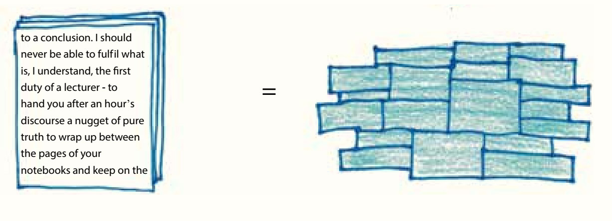
而在这之下还隐藏着砂浆，包括代词、介词、不定冠词。这些纳米级结构对我的眼睛来说太精细了，但对于统计学家的化学分析来说却是理想的研究对象。
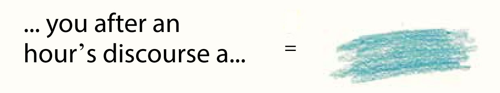
虽然这只是一个比喻，但这个比喻是我大脑中冥冥响起的声音。我头脑一热，便打开这本书的第一部分（“如何像数学家一样思考”），对以“-ly”结尾的副词频率进行了统计，结果为每1000个单词中有10个，和弗吉尼亚·伍尔芙作品中以“-ly”结尾的副词频率差不多，这是一个好预兆。接下来，我忍不住删除了不必要的“-ly”副词，直到频率下降至每 1000个单词中8个以下，这是属于欧内斯特·海明威和托妮·莫里森的频率。我突然发现，作弊的感觉很棒。
新的统计技术真的能与更古老、更丰富、更人性化的语言理解方式和谐相处吗？是的，这是“可想而知”的。
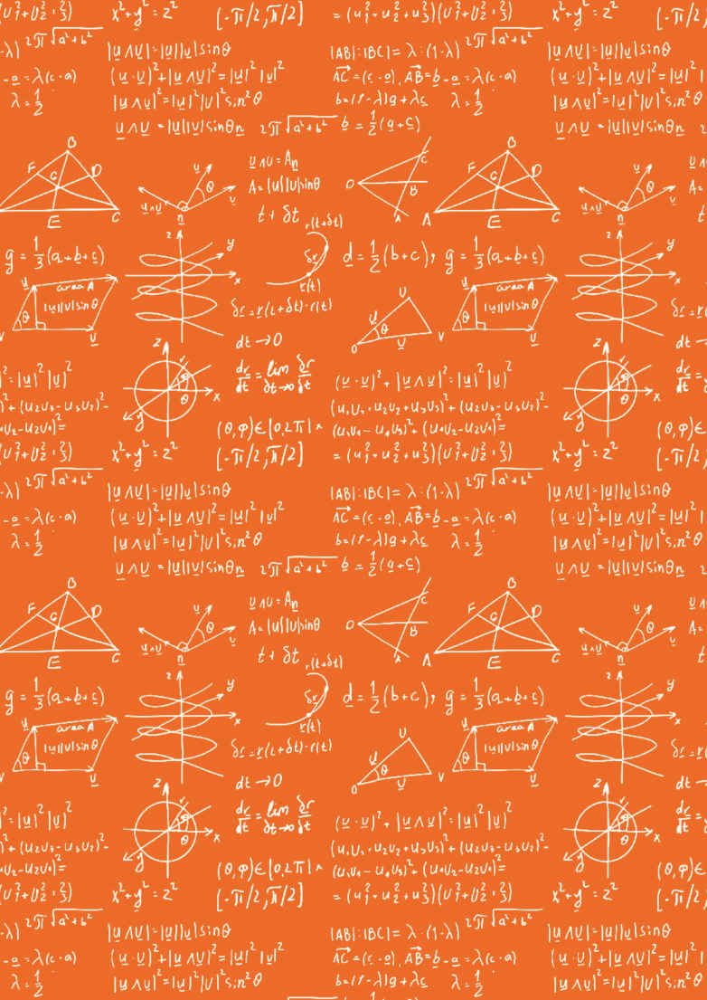